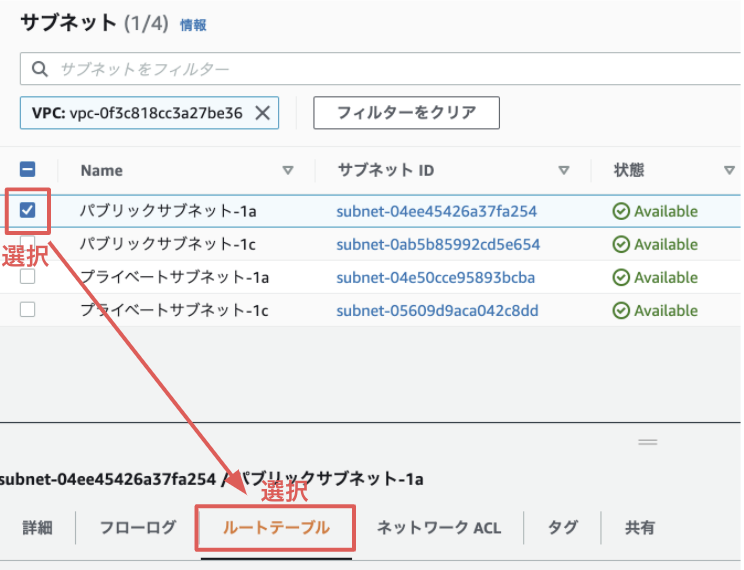
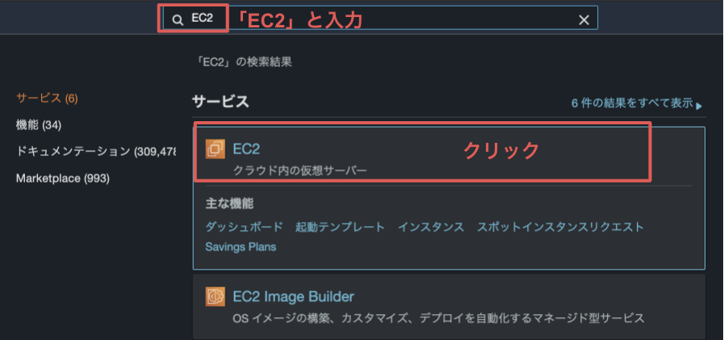
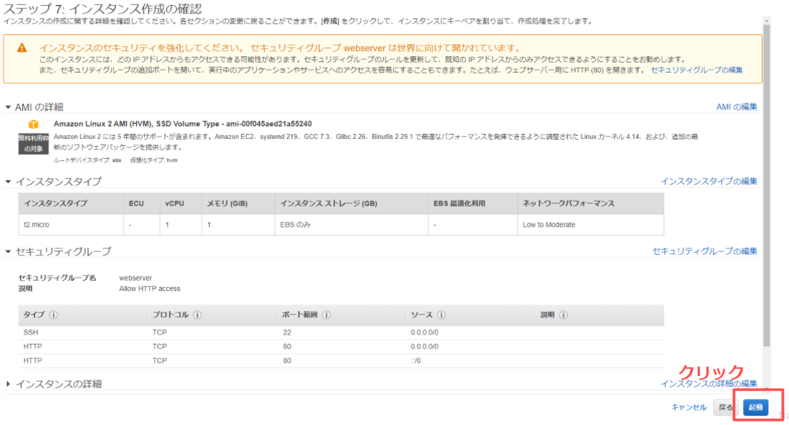
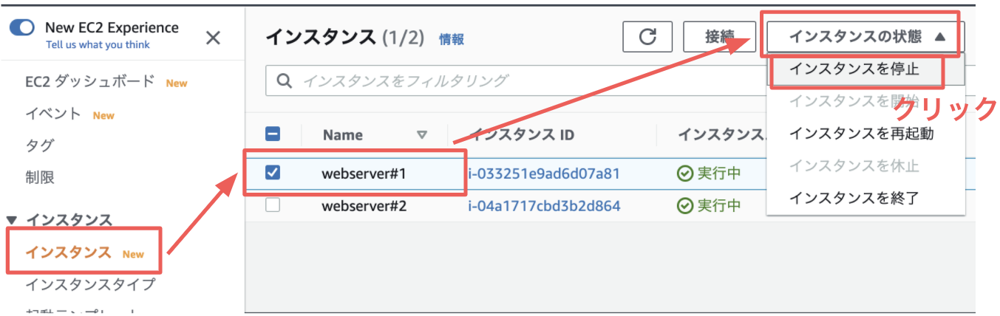

このハンズオンではAWS Hands-on for Beginners 〜 スケーラブルウェブサイト構築編 〜をベースに、WordPressを使ったブログサイトの構築を通じて、スケーラブルな Web システム構築方法を学びます。主に取り扱う AWS サービスはAmazon VPC、Amazon EC2、Amazon RDS、ELB の4つです。
目標
- AWSの基本サービス(VPC、EC2、RDS、ELB)の概念を理解し基本的な操作を身につける
- クラウドの特性を活かしたスケーラブルなインフラストラクチャの構成方法を理解する
料金
AWSの12ヶ月間無料を使用可能な場合はその枠内で実施可能です。12ヶ月無料枠が利用できない場合はAWSの利用コストがかかります。予めご了承ください。
ハンズオン全体像
Webサーバ-データベースの2層アーキテクチャを題材にAWSでスケーラブルなWebサイトを構築する方法を学びます。
Webサーバ層としてWordPressをセットアップしたEC2インスタンスを使用します。データベース層にはAmazon RDS(MySQL)を使用します。
オプションのステップではWebサーバ層のEC2インスタンスを2台構成として冗長化し、ELBを用いて負荷分散を行います。
ハンズオンの流れ
- VPCとサブネットを作成します
- WordPressがインストールされたWebサーバ(EC2インスタンス)を作成します
- データベースとしてRDSインスタンス(MySQL)を作成します
- WordPressの初期設定を行い、ブログが表示できることを確認します
- ロードバランサー(ALB)を作成し、EC2インスタンスを配下に登録します
- WordPress設定済みのAMIを作成します
- AMIから2つめのWebサーバ(EC2インスタンス)を作成します
- 2つめのEC2インスタンスをELB配下に登録し、Webトラフィックの負荷分散を行います
事前準備
AWSを使用します。 こちらの手順を参考にAWSアカウントを作成してください。
既にAWSアカウントをお持ちの方はそちらを使用いただいても構いませんが、既存のリソースと混同しないため可能でしたら新規にアカウントを作成いただくことをお勧めします。
本ハンズオンはAdministratorAccessロールを持ったIAMユーザで行っていただく前提となっています。
参考
当ハンズオンはAWS Hands-on for Beginners 〜 スケーラブルウェブサイト構築編 〜をベースにしています。
それでは「Next」ボタンを押してハンズオンに取り組みましょう！
こちらのリンクより事前に作成したAWSアカウントの認証情報を入力し、AWSマネジメントコンソールにログインします。
リージョンの選択
今回のハンズオンでは東京リージョン(ap-northeast-1)を使用します。
東京リージョンが選択されていない場合は画面右上より東京リージョンを選択します。
マネジメントコンソールの言語設定
画面左下のバーより選択可能です。お好みの言語を選択いただいて構いません。
このステップでは1つのパブリックサブネットを含むVPCを作成します。
上部の検索バーで「VPC」と入力し、サービス欄のVPCをクリックします。
VPCのサービス画面に遷移します。
AWSアカウント作成時にデフォルトのVPCが既に1つ作成されていますが、本ハンズオンでは新規にVPCを作成します。
「VPCウィザードの起動」ボタンをクリックします。
いくつかVPCのタイプが選択できますが、今回はデフォルトで選択されている「1個のパブリックサブネットを持つVPC」を選択します。
以下のように設定し、「VPCの作成」をクリックします。
記載の無い項目はデフォルトのままで構いません。
IPv4 CIDR ブロック | 10.0.0.0/16 (デフォルトのまま) |
VPC 名 | handson-vpc |
パブリックサブネットの IPv4 CIDR | 10.0.0.0/24(デフォルトのまま) |
アベイラビリティゾーン | ap-northeast-1a |
サブネット名 | パブリックサブネット-1a (末尾に「-1a」を追加します) |
正しく入力できていることを確認し「VPCの作成」をクリックします。
「OK」ボタンをクリックします。
以下のように「handson-vpc」が表示されます。
2つのVPCが表示されているため、「VPCフィルタリング」から作成したVPC「handson-vpc」をクリックし、マネジメントコンソールに表示させる情報を絞り込みましょう。作業ミスのリスクを低減することができます。
それでは次のステップに進み、残り3つのサブネットを作成していきましょう。
残りの3つのサブネットを作成していきましょう！
左側のナビゲーションバーより「サブネット」をクリックし、サブネットのメニューに遷移します。
「サブネットの作成」をクリックします。
VPCのメニューにてドロップダウンリストから作成したVPC「handson-vpc」を選択します。
「サブネットの設定」にて3つのサブネットを順に設定していきます。
パブリックサブネット-1cの設定
まず、「サブネット1」を以下のように設定しましょう。
サブネット名 | パブリックサブネット-1c |
アベイラビリティーゾーン | ap-northeast-1c |
IPv4 CIDRブロック | 10.0.1.0/24 |
プライベートサブネット-1aの設定
次に、「新しいサブネットを追加」をクリックして「サブネット2」を以下のように設定します。
サブネット名 | プライベートサブネット-1a |
アベイラビリティーゾーン | ap-northeast-1a |
IPv4 CIDRブロック | 10.0.2.0/24 |

プライベートサブネット-1cの設定
もう一度「新しいサブネットを追加」をクリックして「サブネット3」を以下のように設定します。すべての設定が完了したら「サブネットを作成」をクリックします。
サブネット名 | プライベートサブネット-1c |
アベイラビリティーゾーン | ap-northeast-1c |
IPv4 CIDRブロック | 10.0.3.0/24 |
改めてhandson-vpc内に作成されたサブネットの一覧を表示しましょう。一度「フィルターをクリア」をクリックし、左側の「VPCでフィルタリング」からhandson-vpcを選択します。
Name列やIPv4 CIDR列で並び替えしたりして、4つのサブネットが正しく作成されていることを確認しましょう。
パブリックサブネットは直接インターネットから接続するため、インターネットゲートウェイにアクセスできる必要があります。反対にプライベートサブネットはインターネットからの接続から保護(隔離するため)、インターネットゲートウェイには接続しません。
これらはサブネットに関連付けるルートテーブルにより制御します。
サブネットメニュー画面にて「パブリックサブネット-1a」を選択し、「ルートテーブル」タグを選択します。

ルートテーブルの情報を確認してみましょう。
パブリックサブネット-1aはVPC作成時にセットで作成されたものでした。インターネット接続可能となっているため、ルートテーブルはこのままで問題ありません。
次に「パブリックサブネット-1c」のルートテーブルを見てみましょう。
「パブリックサブネット-1c」は手動で作成したため、インターネットゲートウェイへのルートが設定されていませんでした。
インターネットへ接続できるようにするために、ルートテーブルの設定を行いましょう。
「ルートテーブルの関連付けを編集」をクリックします。
「ルートテーブルID」をメインルートテーブルでは無いものに設定します。
インターネットゲートウェイへのルートが存在することを確認し「保存」ボタンをクリックします。
「サブネット(subnet-xxx)はルートテーブル(rtb-xxx)に正常に関連付けられました」と表示されれば完了です。これでパブリックサブネット-1cはインターネットに接続できるようになりました！
「プライベートサブネット-1a」「プライベートサブネット-1c」のルートテーブルも確認してみましょう。インターネットゲートウェイへのルートは存在しません。
プライベートサブネットはインターネットからアクセスできないことを目的としていますので、このままで問題ありません。
EC2インスタンスを作成し、WordPressをインストールしていきます！
画面上部の検索バーに「EC2」と入力し、EC2の管理画面に遷移しましょう。

画面中央やや下の「インスタンスを起動」をクリックします。
ステップ1：Amazon マシンイメージ(AMI)
一番上の「Amazon Linux 2 AMI」を選択します。
ステップ2：インスタンスタイプの選択
インスタンスタイプはEC2インスタンスのマシンスペック(CPUやメモリ量)を決定します。
今回は無料枠に収まるよう、サイズの小さい「t2.micro」を選択します。
「次のステップ：インスタンスの詳細の設定」をクリックします。
ステップ 3: インスタンスの詳細の設定
EC2インスタンスのネットワークやWordPressをインストールするスクリプトなどを設定していきます。
ネットワークの設定
「ネットワーク」「サブネット」「自動割り当てパブリックIP」を以下のように設定します。
ネットワーク | handson-vpc |
サブネット | パブリックサブネット-1a |
自動割り当てパブリックIP | 有効 |
WordPressをインストールする起動スクリプトの設定
一番下までスクロールします。
「ユーザーデータ」の項目で「テキストで」にチェックが入っていることを確認し、
以下のコードをテキストボックスにコピー&ペーストします。
ユーザーデータに貼り付けるコード
#!/bin/bash
# パッケージのアップデートとインストール
yum -y update
amazon-linux-extras install php7.2 -y
yum -y install mysql httpd php-mbstring php-xml
# WordPressのインストール
wget http://ja.wordpress.org/latest-ja.tar.gz -P /tmp/
tar zxvf /tmp/latest-ja.tar.gz -C /tmp
cp -r /tmp/wordpress/* /var/www/html/
chown apache:apache -R /var/www/html
# WordPressの自動起動を有効化
systemctl enable httpd.service
systemctl start httpd.service
「次のステップ：ストレージの追加」をクリックします。
ステップ4：ストレージの追加
デフォルトの設定のまま、「次のステップ：タグの追加」をクリックします。
ステップ5：タグの追加
作成するEC2インスタンスに名前をつけましょう。
「タグの追加」をクリックし、以下のように設定します。
キー | Name |
値 | webserver#1 |

「次のステップ：セキュリティグループの設定」をクリックします。
ステップ 6: セキュリティグループの設定
インスタンスの通信を制御するためのルールをセキュリティグループで設定します。
今回は新規に作成するため「新しいセキュリティグループを作成する」を選択していることを確認します。
セキュリティグループ名および説明を以下のように設定します。
セキュリティグループ名 | webserver |
説明 | Allow HTTP access |

デフォルトではSSH接続を許可するルールのみが設定されています。今回は誰でもWordPressサーバにWebアクセス(HTTP接続)できようにするため、HTTP接続を許可するルールを作成します。
「ルールの追加」をクリックします。
ルールを以下のように設定します。
タイプ | HTTP |
プロトコル | TCP(タイプにHTTPを選ぶと自動で入力) |
ポート範囲 | 80(タイプにHTTPを選ぶと自動で入力) |
ソース | 任意の場所 |
説明 | (空欄のまま) |
正しく入力できたら「確認と作成」ボタンをクリックします。
ステップ7：インスタンス作成の確認
設定内容の一覧が表示されます。問題なければ「起動」をクリックします。

キーペアの確認
インスタンスへのSSH接続に使用するキーペアの設定ダイアログが表示されます。
本ハンズオンではインスタンスへのSSHは行わないため「キーペアなしで続行」を選択します。
「このAMIに組み込まれたパスワードがわからないと、このインスタンスに接続できないことを認識しています」にチェックを入れます。
正しく選択できていることを確認し、「インスタンスの作成」をクリックします。
インスタンスの作成
以下のように「インスタンスは現在作成中」との画面が表示されます。
「インスタンスの表示」をクリックします。
EC2の管理画面に戻ります。作成したインスタンスの状態が「実行中」となっていれば完了です。
インスタンス作成には30秒～1分ほど時間がかかる場合があるため、「保留中」となっている場合は実行中となるまで少し待ちましょう。
WordPressへのアクセス
WordPressサーバが正常に起動しているか、実際にアクセスして確認してみましょう。
作成したインスタンスを選択し、詳細情報を確認します。
「パブリック IPv4 アドレス」のアドレスをコピーし、ブラウザの新しいタブを開いて貼り付けます。
以下のようにWordPressの初期設定画面が表示されればOKです。
初期設定は後のステップで行いますので、表示ができたらタブを閉じてしまいましょう。
RDB(リレーショナルデータベース)のマネージドサービスであるAmazon RDSを使用して、WordPressで利用するデータベースを用意します。
事前準備(1) セキュリティグループの作成
RDSインスタンスに割り当てるセキュリティグループを作成します。
データベースはWordPressが起動するEC2インスタンスのみが利用するため、EC2インスタンスからの通信のみを許可するようにします。
EC2コンソール左側のメニューバーより「ネットワーク&セキュリティ」カテゴリにあるセキュリティグループをクリックします。
「セキュリティグループを作成」をクリックします。
「基本的な詳細」を以下のように入力します。
セキュリティグループ名 | dbserver |
説明 | RDS for MySQL |
VPC | handson-vpc |
インバウンドルールの「ルールを追加」をクリックします。
インバウンドルールを以下のように設定します。
タイプ | MYSQL/Aurora |
プロトコル | TCP(タイプを選ぶと自動で入力) |
ポート範囲 | 3306(タイプを選ぶと自動で入力) |
ソース | カスタム セキュリティグループ：webserver |
説明 - オプション | (空欄のまま) |
アウトバウンドルールおよびTagsはそのままとします。
正しく設定できていることを確認し「セキュリティグループを作成」をクリックします。
無事にセキュリティグループ「dbserver」が作成されます。
設定内容に問題がないか確認します。
事前準備(2) サブネットグループの作成
RDSコンソールにアクセスします。
上部のメニューバーで「RDS」と入力し、サービスの項目にある「RDS」をクリックします。
RDSコンソールが表示されます。
左側のメニューバーより「サブネットグループ」をクリックし、画面右上の「DBサブネットグループを作成」をクリックします。
「サブネットグループの詳細」を以下のように入力します。
名前 | db-subnet |
説明 | RDS for MySQL |
VPC | handson-vpc |

作成したサブネットグループに2つのサブネット「プライベートサブネット-1a」「プライベートサブネット-1c」を追加します。
「アベイラビリティーゾーンを選択」のドロップダウンリストをクリックし「ap-northeast-1a」「ap-northeast-1c」の2つを選択します。
「サブネットを選択」のドロップダウンリストをクリックします。
アベイラビリティゾーンごとに選択可能なサブネットが表示されますが、プライベートサブネットとして作成したものを選択します。
正しく設定できたら「作成」をクリックし、サブネットグループを作成します。
サブネットグループが作成されます。これで事前準備が終わりました！
RDSインスタンスの作成
RDSコンソールの左側メニューバーより「データベース」を選択し「データベースの作成」をクリックします。
以下のような画面になります。

データベース作成方法
デフォルトの「標準作成」のままとします。
エンジンのオプション
今回はMySQLを利用するためエンジンのタイプで「MySQL」を選択します。
バージョンはデフォルトのままとします。
テンプレート
「無料利用枠」を選択します。
設定
以下のように入力します。
DB インスタンス識別子 | wp-db |
マスターユーザー名 | admin |
マスターパスワード | password |
DBインスタンスサイズ
デフォルト(db.t2.micro)のまま進みます。
ストレージ
デフォルトのまま進みます。
可用性と耐久性
今回は無料枠が適用されるシングルAZ配置とするため、マルチAZ配置は選択しません。
接続
以下のように設定します。
Virtual Private Cloud (VPC) | handson-vpc |
サブネットグループ | db-subnet |
パブリックアクセス可能 | なし |
VPCセキュリティグループ | 既存の選択 |
既存のVPCセキュリティグループ | dbserver (defaultが選択されている場合は解除します。) |
アベイラビリティゾーン | ap-northeast-1a |
データベース認証
デフォルトのまま進みます。
追加設定
最初のデータベース名をwordpressとします。
「自動バックアップの有効化」のチェックを外します。
その他の設定はデフォルトのままとします。
設定ができたら「データベースの作成」をクリックします。
データベースの作成が開始されます。作成には3~5分程度かかるため少し待ちましょう

「利用可能」と表示されたらRDSインスタンスの作成は完了です！
エンドポイントの確認
後のステップでMySQLへの接続情報として用いるエンドポイントを確認します。
作成したDBインスタンス「wp-db」をクリックします。
「接続とセキュリティ」タブにある「エンドポイント」の値をコピーしてメモしておきます。
データベースの準備ができましたので、WordPressの初期設定を行いましょう。
WordPress管理画面へのアクセス
画面上部の検索バーに「EC2」と入力し、EC2の管理画面に遷移します。
リソース内のメニューにある「実行中のインスタンス」をクリックします。
「webserver#1」を選択し、パブリックIpv4アドレスをコピーし、ブラウザの新しいタブを開いて貼り付けます。
WordPressの初期設定画面が表示されます。
「さあ、始めましょう！」をクリックして設定に進みましょう。
データベース接続の設定
以下のように設定します。
データベース名 | wordpress |
ユーザー名 | admin |
パスワード | password |
データベースのホスト | (RDSインスタンスのエンドポイント) 例：wp-db.cgmlxlpevsr4.ap-northeast-1.rds.amazonaws.com |
テーブル接頭辞 | wp_ |
必要な設定を入力したら「送信」ボタンをクリックします。
「この部分のインストールは無事完了しました。」と表示されればデータベースの接続は成功です。
「インストール実行」をクリックします。
サイトのタイトル | お好きなタイトルをつけてください！ (例：はじめてのAWS) |
ユーザー名 | admin |
パスワード | (自動生成) |
メールアドレス | ご自身のメールアドレス |
検索エンジンでの表示 | 「検索エンジンがサイトをインデックスしないようにする」にチェック |
ここで設定するパスワードは次のログインで入力しますので、コピーして手元のメモに残してください。
入力できたら「WordPressをインストール」をクリックします。
以下の画面が表示されればWordPressの初期設定が完了です。
「ログイン」をクリックします。
ユーザー名に「admin」、パスワードにメモした内容を入力し「ログイン」をクリックします。
WordPress管理画面にログインできました。
画面左上のサイト名にマウスオーバーし、「サイトを表示」をクリックしましょう。
WordPressサイトのトップページが表示されます！
WordPressによる簡単なブログサイトですが、AWS上に構築することができました！
現状はWebサーバとして1つのEC2インスタンス、DBサーバーとして1つのRDSインスタンスを使用しています。
オプションのステップではこれらの冗長化を行います。(DBの冗長化は参考情報の掲載のみ)
複数のWebサーバを稼働する場合、それぞれのWebサーバにリクエストを振り分けるロードバランサーが必要です。
Webアクセスを受付け、複数のEC2インスタンスへ負荷分散させるロードバランサーとしてELB(Elastic Load Balancing)を作成します。ELBやターゲットグループの作成方法について学びます。
ELB作成画面への遷移
ELBの設定はEC2コンソールから行います。
画面上部の検索バーに「EC2」と入力し、EC2コンソールへ遷移します。
左側のメニューバーより「ロードバランサー」を選択し、「ロードバランサーの作成」をクリックします。
ロードバランサーの種類の選択
3種類のロードバランサーが選択できます。今回はWebアプリケーションに最適なApplication Load Balancer(ALB)を選択します。
手順1：ロードバランサーの設定
以下のように設定します。
名前 | elb |
スキーム | インターネット向け |
IPアドレスタイプ | ipv4 |
リスナー | (デフォルトのまま) |
VPC | handson-vpc |
アベイラビリティーゾーンと サブネット | ap-northeast-1aにチェック (サブネット：パブリックサブネット-1a) ap-northeast-1cにチェック (サブネット：パブリックサブネット-1c) |
アドオンサービスはそのままとし「次の手順：セキュリティ設定の構成」をクリックします。
手順2：セキュリティ設定の構成
「HTTPSではなくHTTPを使っています。」という内容の警告が表示されます。今回はハンズオンのためこのまま次に進みます。
「次の手順：セキュリティグループの設定」をクリックします。
手順3：セキュリティグループの設定
ロードバランサ用に新しいセキュリティグループを作成します。
「新しいセキュリティグループを作成する」を選択します。
以下のように設定します。
セキュリティグループ名 | elb |
説明 | Allow HTTP access |
デフォルトですべてのIPからTCP80(HTTP)を許可するルールが設定されているため、このまま「次の手順：ルーティングの設定」をクリックします。
手順4：ルーティングの設定
ターゲットグループ
以下のように設定します。
ターゲットグループ | 新しいターゲットグループ |
名前 | webserver |
ターゲットの種類 | インスタンス |
ポート | 80 |
プロトコルバージョン | HTTP1 |
ヘルスチェック
以下のように設定し、「次の手順：ターゲットの登録」をクリックします。
プロトコル | HTTP |
パス | /wp-includes/images/blank.gif |
手順5：ターゲットの登録
ターゲットにインスタンスを登録します。これによりELBがトラフィックをインスタンスにルーティングできるようになります。
画面下部のインスタンス選択よりwebserver#1を選択し「登録済みに追加」をクリックします。
すると登録済みターゲットにwebserver#1が追加されます。
「次の手順：確認」をクリックします。
手順6：確認
設定内容を確認し、問題なければ「作成」をクリックします。
以下の画面が表示されたら、「閉じる」をクリックします。
ロードバランサー「elb」が作成されています。状態がprovisioningとなっている場合は少し間を置いて更新しましょう。activeとなったらロードバランサーの完了です。
作成されたロードバランサーの確認
「リスナー」タブを選択します。
リスナー「HTTP:80」が存在し、デフォルトルールに転送先「webserver」が設定されています。
転送先に設定されているwebserverをクリックします。
ターゲットグループ「webserver」の情報が表示されます。
「Targets」タブをクリックします。
ターゲットにEC2インスタンス「webserver#1」が登録されていることを確認します。ステータスが「Healthy」であれば、リクエストを受け付けていることを意味します。
ELBを経由したWordPressサイトへのアクセス
左側メニューの「ロードバランサー」をクリックしてロードバランサーのメニュニー戻ります。
「elb」を選択し、詳細タブからDNS名を確認・コピーします。
WordPressのブログサイトが表示されます。
EC2インスタンスにアクセスした際と同じような画面になっています。
しかし、今回はロードバランサー(ELB)がフロントエンドとしてHTTPリクエストを受け付け、バックエンドのEC2インスタンスに転送しています。
これによりバックエンドのサーバが複数台にスケールしてもトラフィックを負荷分散することができます。次のオプションではEC2インスタンスを新しく1台追加します。
3つのステップによりWordPressサーバの冗長化と負荷分散を行います。
- webserver#1をベースにAMI(イメージ)を作成
- AMIから新しいEC2インスタンスを作成
- 作成したEC2インスタンスをELBに紐付け
AMI(イメージ)の作成
EC2コンソールを開き、左側のメニューから「インスタンス」を選択します。
webserver#1を選択し「アクション」＞「イメージとテンプレート」＞「イメージを作成」をクリックします。
以下のように入力します。
イメージ名 | wordpress-server |
イメージの説明 | (空欄のまま) |
再起動しない | (有効化にチェックなしのまま) |
ボリューム | (デフォルトのまま) |
入力できたら「イメージを作成」をクリックします。
上部にAMI作成についてのメッセージが表示されます。
イメージID(ami-xxxxxxxx)をクリックして詳細を確認しましょう。
作成したAMI(wordpress-server)が表示されます。ステータスがpendingの場合はavailableになるまで待ちましょう。3分程度かかる場合があります。
AMIから新しいEC2インスタンスを作成
availableになったAMIを選択し。「アクション」＞「起動」とクリックします。
ステップ2：インスタンスタイプの選択
1台目のEC2インスタンスと同様に設定を入力していきます。
インスタンスタイプに「t2.micro」を選択し、「次のステップ：インスタンスの詳細の設定」をクリックします。
ステップ 3: インスタンスの詳細の設定
「ネットワーク」「サブネット」「自動割り当てパブリックIP」を以下のように設定します。
ネットワーク | handson-vpc |
サブネット | パブリックサブネット-1c |
自動割り当てパブリックIP | 有効 |
「次のステップ：ストレージの追加」をクリックします。
ステップ 4: ストレージの追加
ストレージはデフォルトの設定のままとし、「次のステップ：タグの追加」をクリックします。
ステップ 5: タグの追加
2台目のEC2インスタンスになるため、「タグの追加」をクリックし、以下のように設定します。
キー | Name |
値 | webserver#2 |
「次のステップ：セキュリティグループの設定」をクリックします。
ステップ 6: セキュリティグループの設定
同じWordPressサーバとなるため、1台目と同じセキュリティグループを割り当てましょう。
「既存のセキュリティグループを選択する」にチェックします。
セキュリティグループ「webserver」を選択し「確認と作成」をクリックします。
ステップ 7: インスタンス作成の確認
設定内容の一覧が表示されます。問題なければ「起動」をクリックします。
キーペアの確認
1台目と同様「キーペアなしで続行」を選択します。
「このAMIに組み込まれたパスワードがわからないと、このインスタンスに接続できないことを認識しています」にチェックを入れます。
正しく選択できていることを確認し、「インスタンスの作成」をクリックします。
以下のように「インスタンスは現在作成中」との画面が表示されます。
「インスタンスの表示」をクリックします。
EC2の管理画面に戻ります。webserver#2の状態が「実行中」となっていれば完了です。
インスタンス作成には30秒～1分ほど時間がかかる場合があるため、「保留中」となっている場合は実行中となるまで少し待ちましょう。
作成したEC2インスタンスをELBに紐付け
ELBへの紐付けはロードバランサではなくターゲットグループに行います。
EC2コンソールの左側メニューから「ターゲットグループ」を選択し「webserver」をクリックします。
ターゲットグループへ登録
Targets」タブを選択し「Register targets」をクリックします。
Available instancesのメニューにて「「webserver2」を選択し「include as pending below」をクリックします。
Targetsの項目にwebserver#2がpending targetとして追加されたことを確認し、「Register pending targets」をクリックします。
webserver#2がターゲットグループに登録されました！
Statusが「Initial」の場合は「healthy」となるまで少し待ちましょう。
これでWordPressサーバが2台の冗長構成となり、負荷分散が行われるようになりました！
念のためELBのDNS名からアクセスし、WordPressサイトが表示されることを確認しましょう。
左側メニューの「ロードバランサー」をクリックしてロードバランサーのメニュニー戻ります。
「elb」を選択し、詳細タブからDNS名を確認・コピーします。
WordPressのブログサイトが表示されます。
2台のEC2インスタンスのうち1台を停止させ、その状態でもWordPressサイトにアクセスできることを確認します。
EC2コンソール左側メニューの「インスタンス」を選択します。
どちらのインスタンスでも構いませんが、今回は1台目のインスタンスを停止してみましょう。

確認のダイアログが表示されるため「停止」ボタンをクリックします。
インスタンス管理画面に戻りwebserber#1が停止されていることを確認します。
この状況でもWordPressサイトが表示されるか確認しましょう。
前のステップと同様ELBのDNS名にブラウザタブでアクセスします。
WordPressサイトが表示されました！
お疲れ様でした！ハンズオンは以上になります。
このハンズオンでは以下のことを学びました。
不要な課金を避けるため、作成した環境を継続して使用しない場合は削除しましょう。
RDS DBインスタンス
RDSコンソールよりDBインスタンスの削除を行います。
削除確認のダイアログが表示されます。
「最終スナップショットを作成しますか？」のチェックを外します。
「インスタンスの削除後、システムスナップショットとポイントインタイムの復元を含む自動バックアップが利用不可となることを了承しました。」にチェックを入れます。
delete meとメッセージを入力し「削除」をクリックします。
DBインスタンスの削除が完了したら、次にサブネットグループを削除します。
EC2インスタンス
EC2コンソールにアクセスし、インスタンス管理メニューを開きます。
2台のインスタンスを選択し「インスタンスの状態」＞「インスタンスを終了」をクリックします。
終了の確認ダイアログが表示されるので、「終了」をクリックします。
以上でEC2インスタンスの削除は完了です。
AMI
作成したAMIを選択し「アクション」＞「登録解除」をクリックします。
登録解除の確認ダイアログが表示されるので「次へ」をクリックします。
以上でAMIの削除は完了です。
EBSスナップショット
AMIを作成する過程で内部的にスナップショットが作成されているため、こちらも削除します。
Elastic Block Storeの「スナップショット」を選択します。
表示されているスナップショットを選択し「アクション」＞「削除」をクリックします。
削除の確認ダイアログが表示されるので「はい、削除する」をクリックします。
以上でEBSスナップショットの削除は完了です。
ELB
ロードバランサーのメニューより「elb」を選択し「アクション」＞「削除」をクリックします。
削除の確認ダイアログが表示されるので「はい、削除する」をクリックします。
ターゲットグループも同様に削除しましょう。
ターゲットグループのメニューより「webserver」を選択し「Actions」＞「Delete」をクリックします。

削除の確認ダイアログが表示されるので「Yes、delete」をクリックします。
以上でターゲットグループの削除は完了です。
VPC
最後にVPCを削除します。
VPCコンソールにアクセスします。
VPC一覧を表示し、今回作成した「handson-vpc」を選択し「アクション」＞「VPCの削除」をクリックします。
VPCを削除すると依存リソース(サブネット、インターネットゲートウェイ、セキュリティグループ等)も同時に削除されます。
削除対象を確認し問題なければ確認フィールドに「削除」と入力し、「削除」をクリックします。
以上でハンズオンで作成したすべてのリソースの削除が完了しました。
お疲れ様でした！
RDSマルチAZ配置
RDS DBインスタンスをマルチAZ配置とすることで、データベース層を冗長化し、対障害性を持たせることができます。
EC2 Instance Connect
今回はインスタンスにログインしないためSSHキーペアは作成しませんでしたが、EC2 Instance Connectを使用するとブラウザベースでキーペアなしでもインスタンスに接続することができます。